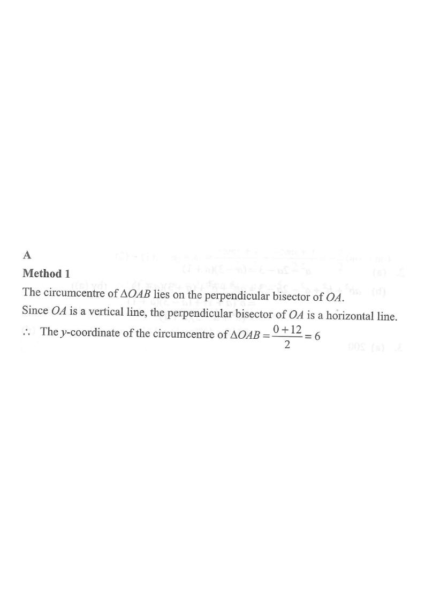

O (origin) A (0, 12) B (30, 12) Circumcentre C ΔOAB sides ⊥ bisector of OA ⊥ bisector of AB Circumcircle
Question & Full Solution
[2013 MC #43]
Let $O$ be the origin. If the coordinates of the points $A$ and $B$ are $(0,\,12)$ and $(30,\,12)$ respectively, then the $y$-coordinate of the circumcentre of $\triangle OAB$ is
A. 6
B. 8
C. 12
D. 15

Figure (original exam diagram)
STEP 1 · PLOT THE POINTS
The three vertices are
$$O=(0,0),\qquad A=(0,12),\qquad B=(30,12).$$
Notice that $A(0,12)$ and $B(30,12)$ have the same $y$-coordinate, so $AB$ is a horizontal segment of length $30$. Meanwhile $OA$ is a vertical segment on the $y$-axis of length $12$, and $\angle OAB = 90^\circ$ (a right-angled triangle).
💡 In a right-angled triangle the circumcentre is the midpoint of the hypotenuse.
STEP 2 · PROPERTY OF THE CIRCUMCENTRE
The circumcentre $C$ is the common point of the three perpendicular bisectors of the sides, so it is equidistant from $O$, $A$ and $B$:
$$CO = CA = CB.$$
Equivalently, $C$ must lie on the perpendicular bisector of $OA$and on the perpendicular bisector of $AB$.
Perpendicular Bisector Theorem\(PA=PB\;\Longleftrightarrow\;P\ \text{lies on the perpendicular bisector of }AB\)The circumcentre is equidistant from \(O\), \(A\) and \(B\), so it lies on two perpendicular bisectors.
STEP 3 · PERPENDICULAR BISECTOR OF $OA$
$O(0,0)$ and $A(0,12)$ lie on the $y$-axis, so segment $OA$ is a vertical line. Its perpendicular bisector is therefore a horizontal line passing through the midpoint of $OA$:
$$\text{midpoint of } OA=\left(0,\ \frac{0+12}{2}\right)=(0,\,6).$$
Hence the perpendicular bisector of $OA$ has equation
$$y = 6.$$
💡 Since the circumcentre lies on this line, its $y$-coordinate is already determined to be $6$.
Mid-point Formula\(M={\left(\dfrac{x_{1}+x_{2}}{2},\ \dfrac{y_{1}+y_{2}}{2}\right)}\)The mid-point of \(O(0,0)\) and \(A(0,12)\) is \((0,6)\), so the bisector of \(OA\) is \(y=6\).
STEP 4 · PERPENDICULAR BISECTOR OF $AB$ (CHECK)
For completeness, $A(0,12)$ and $B(30,12)$ give the midpoint
All three distances agree, so $C(15,6)$ really is the circumcentre.
STEP 6 · CONCLUSION
The $y$-coordinate of the circumcentre of $\triangle OAB$ is
$$\boxed{\,6\,}$$
which corresponds to option A.
⚡ Shortcut: since $\angle OAB=90^\circ$, the circumcentre is the midpoint of the hypotenuse $OB$, whose $y$-coordinate is $\dfrac{0+12}{2}=6$. Since $OA$ is vertical, the perpendicular bisector of $OA$ is the horizontal line $y=\dfrac{0+12}{2}=6$ directly.
Circumcentre of a Right-Angled Triangle\(\text{circumcentre}=\text{mid-point of the hypotenuse}\)Since \(\angle OAB=90^{\circ}\), \(OB\) is the hypotenuse, whose mid-point has \(y\)-coordinate \(6\) at once.
Answer: A. 6
PRACTICESimilar question — try it yourself
Question. In the rectangular coordinate plane, \(O(0,0)\), \(A(0,16)\) and \(B(30,16)\) are the vertices of a triangle. Find the \(y\)-coordinate of the circumcentre of \(\triangle OAB\). [1 mark]
Show the worked solution
Step 1. \(A(0,16)\) and \(B(30,16)\) have the same \(y\)-coordinate, so \(AB\) is horizontal; \(OA\) lies on the \(y\)-axis, so \(\angle OAB=90^{\circ}\).
Step 2. The circumcentre is equidistant from the three vertices, so it lies on the perpendicular bisector of \(OA\), the horizontal line \(y=\dfrac{0+16}{2}=8\).
Step 3. Equivalently, it is the mid-point of the hypotenuse \(OB\): \({\left(\dfrac{0+30}{2},\dfrac{0+16}{2}\right)}=(15,8)\).
Step 4. Check the circumradius: \(OB=\sqrt{30^{2}+16^{2}}=34\), so \(r=17\), and the distance from \((15,8)\) to \(O\) is \(\sqrt{225+64}=17\) \u2713.